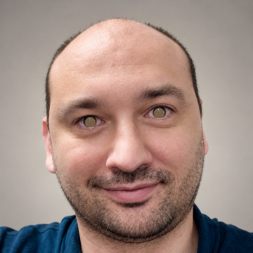
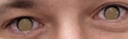
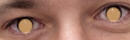
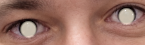
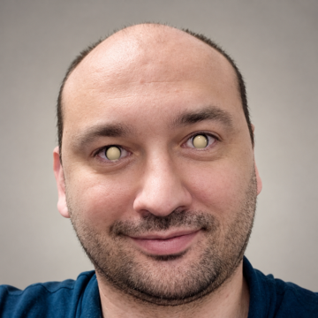
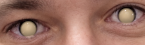
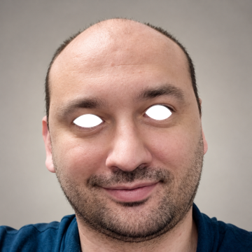
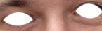

A - Subtle warm


Restrained brown-gold illumination; closest to a photographic treatment.
These are ordinary SDR previews. The glow is painted into these preview PNGs so you can judge its placement and style on a normal monitor. They do not reproduce HDR brightness. In the eventual HDR JPEG, the normal SDR photo can remain unchanged.
A-D soften the pupil contrast rather than leaving black holes inside bright rings. E makes the entire visible eye bright white, including the iris, pupil, and whites. The enlarged strips show the same previews in detail.


Restrained brown-gold illumination; closest to a photographic treatment.

An unmistakable warm glow across the full iris, with soft edges.

A pale, luminous fill; more stylized and less saturated than amber.


A larger, soft light-source reflection with a gentler falloff below.


Bright white across the entire visible eye; no dark iris or pupil. A deliberately supernatural look, confined inside the eyelids.